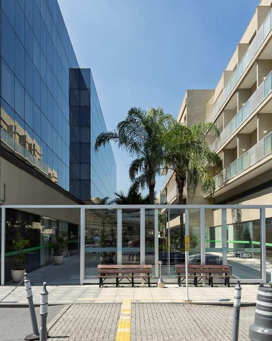
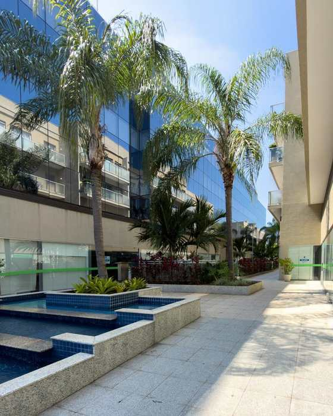
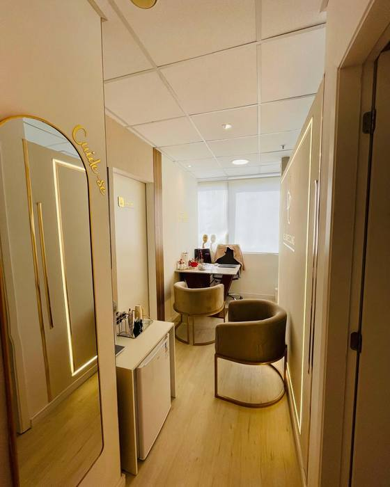
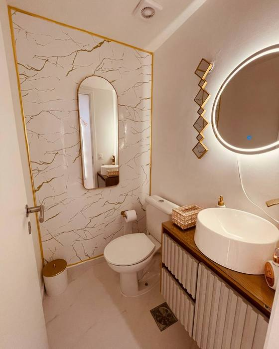

Psicoterapia baseada em evidências para adolescentes e adultos
Um espaço seguro para construir uma vida que valha a pena ser vivida.
Barra da Tijuca e online
É para você?
Alguns dos motivos que levam adolescentes e adultos a procurar psicoterapia.
- Dificuldade em lidar com emoções
- Problemas de autoestima
- Dificuldade nos relacionamentos
- Luto ou perdas diversas
- Momento de transição de vida
- Dificuldades na relação com a alimentação e com o corpo
- Traumas, bullying e abusos diversos
- Busca por autoconfiança, autoconhecimento ou mudança de padrões
- Diagnósticos de transtornos mentais
Áreas de atuação
Desregulação emocional, transtornos alimentares e obesidade, luto e perdas, cuidados paliativos.
Cada pessoa chega à psicoterapia com uma história e objetivos diferentes. O tratamento é construído a partir dessa compreensão.
Olá, eu sou Daniela
Psicóloga, especialista em Terapia Cognitivo-Comportamental (TCC) e Terapia Comportamental Dialética (DBT). Há mais de duas décadas atuo na Psicologia, com experiência clínica no atendimento de adolescentes e adultos e uma prática orientada por evidências científicas.
- 20+anos de atuação na Psicologia
- TCCEspecialista em Terapia Cognitivo-Comportamental
- DBTEspecialista em Terapia Comportamental Dialética
- Adolescentes e adultospúblico atendido
Aceitação
Compreender e acolher sua experiência, sua história e o que você sente, sem julgamento.
Mudança
Desenvolver novas habilidades e estratégias para lidar com emoções, pensamentos e situações difíceis.
Conheça minha trajetória
Mas, antes de tudo isso, sou Daniela. Nasci em Brasília, mas sou carioca de coração. Moro no Rio de Janeiro, sou casada, mãe e apaixonada pela minha família. Gosto de viajar, conhecer novos lugares, estar em contato com a natureza, aproveitar um bom café, assistir a filmes e valorizar os pequenos momentos da vida.
Minha trajetória profissional começou na área de Recursos Humanos, desenvolvendo pessoas e equipes. Foi essa experiência que despertou meu interesse pelo comportamento humano e me mostrou que meu lugar era na psicologia clínica.
Minha primeira paixão clínica foram os transtornos alimentares e a obesidade. Ao acompanhar esses pacientes, percebi que o sofrimento frequentemente ia muito além da relação com a comida. Essa descoberta despertou meu interesse pela DBT e pelo trabalho com pessoas que vivem intensa desregulação emocional, área que hoje representa meu principal foco de atuação.
Também tenho um interesse especial pelos cuidados paliativos. A experiência com a finitude e o luto transformou minha forma de compreender o sofrimento humano e fortaleceu minha convicção de que, mesmo diante das maiores dificuldades, é possível reconstruir uma vida com mais significado.
Meu trabalho integra a TCC e a DBT, abordagens baseadas em evidências que me permitem compreender, junto com cada pessoa, os padrões que mantêm seu sofrimento e desenvolver novas formas de lidar com pensamentos, emoções e comportamentos.
Eu, Ele e ELA
Uma história real de amor e dor com a Esclerose Lateral Amiotrófica em nossa vida. Uma obra biográfica que nasceu de uma experiência profundamente transformadora e atravessa temas como amor, adoecimento, luto e finitude.
Ler na AmazonComo funciona
-
01
Escolha a modalidade
Online, por videochamada, ou presencial no consultório da Barra da Tijuca.
-
02
Envie seus dados
Nome, WhatsApp e e-mail. Leva menos de um minuto.
-
03
Combinamos o horário
Eu retorno pessoalmente com os horários disponíveis e os valores.
-
04
Confirmação
Você recebe a confirmação e as orientações para a primeira sessão.
Online ou presencial
Atendimentos também realizados na Clínica Comportamente, no Del Castilho, com outras psicólogas e psicólogos.
O consultório
Av. Ayrton Senna, 2500, na Barra da Tijuca. Da calçada até a poltrona.




Agendar consulta
Escolha a modalidade, deixe seus dados e eu retorno pessoalmente com os horários disponíveis e os valores.
Prefere falar direto?
Falar no WhatsApp
Etapa 1 — Modalidade
Etapa 2 — Seus dados
Seus dados abrem prontos no seu WhatsApp. Nada fica gravado neste site.
Perguntas frequentes
Quanto tempo dura a sessão?
Uma sessão de psicoterapia individual dura 50 minutos e é realizada geralmente uma vez por semana, podendo ser mais frequente no início e menos frequente depois de um tempo.
O atendimento é online ou presencial?
Os dois. O presencial acontece no consultório, na Av. Ayrton Senna, 2500, na Barra da Tijuca. O online acontece por videochamada, em plataforma digital de sua preferência, sem depender da localização.
Não existe melhor modalidade: vai depender de cada caso. Alguns clientes se sentem mais à vontade para compartilhar seus sentimentos presencialmente, outros se expressam melhor por meio digital.
Quem pode fazer terapia?
A psicoterapia não é somente para quem tem o diagnóstico de um transtorno mental: ela também serve para promover bem-estar e ajudar a pessoa a utilizar melhor os seus potenciais.
Meu atendimento é voltado para adolescentes e adultos.
Como funciona a primeira sessão?
O contato é feito pelo WhatsApp, onde combinamos o dia e o horário. No primeiro encontro, você conta o que tem vivido e o que busca, esclareço as suas dúvidas sobre o processo e, juntos, definimos como o acompanhamento vai seguir.
Como agendo e recebo a confirmação?
Você escolhe a modalidade e envia seus dados no formulário desta página. A mensagem abre pronta no seu WhatsApp e eu retorno pessoalmente com os horários disponíveis e os valores. A confirmação e as orientações para a sessão chegam pelo mesmo canal.
Pronto para dar o primeiro passo?
Me conte o que você está buscando e eu retorno pessoalmente.
Agendar consulta